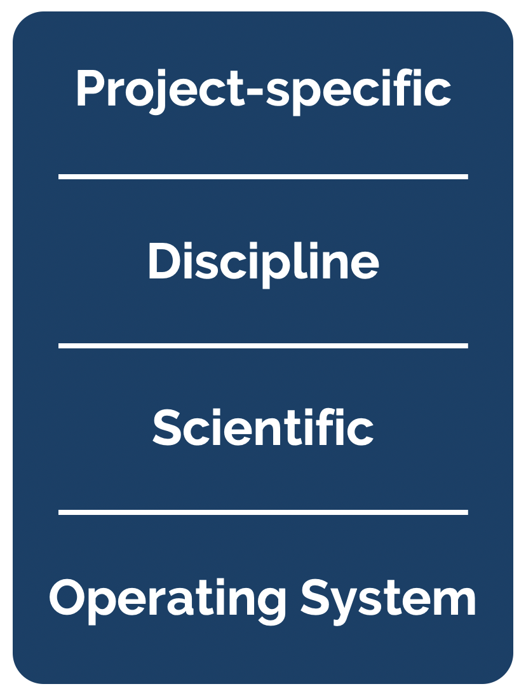
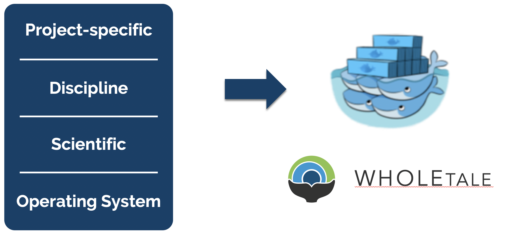
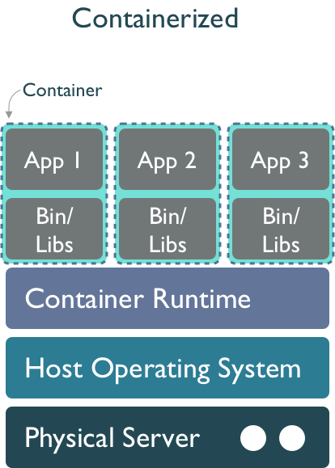
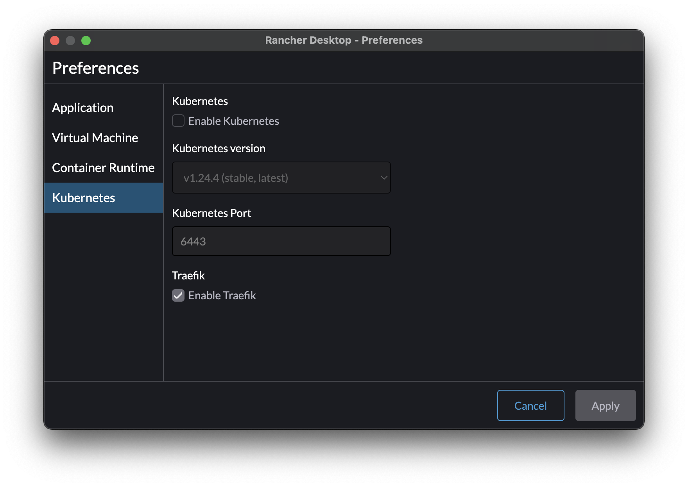

18 Reproducibility and Containers
18.1 Learning Objectives
Think about dependency management, reproducibility, and software
Become familiar with containers as a tool to improve computational reproducibility
Discuss how the techniques from this class can improve reproducibility
Slides: Accelerating synthesis science through reproducible science
18.2 Software collapse
In his blog post on software collapse, Konrad Hinsen outlines the fragile state of scientific software today. While we like to think that our software is robust, in reality it is being constantly revised, expanded, broken, and abandoned, such that our use of any software today is almost certainly doomed to disfunction shortly. Hinsen describes the science software ecosystem as having 4 layers, from totally general operating systems at the bottom, to scientific libraries, discipline-specific libraries, and finally project-specific software at the top. Hinsen states:

There are essentially two tasks that need to be organized and financed: preventing collapse due to changes in layers 1 and 2, and implementing new models and methods as the scientific state of the art advances. These two tasks go on in parallel and are often executed by the same people, but in principle they are separate and one could concentrate on just one or the other.
The common problem of both communities is collapse, and the common enemy is changes in the foundations that scientists and developers build on.
While most reproducibility work has focused at the project-specific software level, Hinsen argues that there is tremendous risk deep down in the software ecosystem. There are many examples of compatibility decisions in scientific software that create problems for long-term stability, even if they are the right decision at the time. For example, see the compatbility dicussions from numpy and pandas to get a sense fo the challenges faced when maintaining science software. This issue with abandoned software and lonely maintainers has become a prevalent meme in the open source software world.

18.3 Delaying the inevitable
While software is destined to continue to rot, projects like WholeTale, repo2docker, and Binder are working towards tools that can help capture more of the software stack needed to reproduce computations, thereby enabling us to freeze older versions of software and replay them in compatible combinations. Or, barring full re-execution, at least to understand them. The idea is to take advantage of containerized computing environments, which can be described as ‘software as code’ because containers can be declaratively described in a configuration file. While project-specific software and possibly disciplinary software dependencies might be captured in a requirements.txt file for python, we also need to know all of the details of lower layers, including system libraries and kernel versions. Plus data dependencies, processing workflows, and provenance. And it turns out that these very details can be captured quite effectively in a virtualized container. For example, WholeTale uses container images to record not just project-specific software dependencies, but also operating system details, data dependencies, and runtime provenance.

This is accompished by first configuring a base image that contains core software from layers 1 and 2, and then researchers work within common tools like Jupyter and RStudio to create their scientific products at layers 3 and 4. These can then be captured in virtual environments, which get added to the container configuration, along with key details such as external data dependencies and process metadata. All of this can be serialized as a “Tale”, which is basically an archival package bundled around a container image definition.
This approach combines the evolving approach to using a Dockerfile to precisely configure a container environment with the use of structured metadata and provenance information to create an archival-quality research artifact. These WholeTale tales can be downloaded to any machine with a container runtime and executed under the same conditions that were used when the original tale was archived.

18.4 Hands-off with Containers and Docker
Working with docker or containers requires a container runtime. One of the nicest lately is Rancher Desktop. Install the binary for you platform, and then after it starts, enter the configuration Preferences, and then deselect “Kubernetes” to disable the kubernetes distribution, which takes up a lot of resources.

There are many different tools you can use with docker, including the Docker engine system from Docker.com using the docker client tool, and the containerd ecosystem using nerdctl as a client tool. Both the docker command and the nerdctl command share the same commands. The basics we will practice will be:
nerdctl pull python:3.9: to grab an existing python image from the DockerHub repositorynerdctl run -it python:3.9 -- python: to start a standard python interpreternerdctl build: to build a new image from a Dockerfile configuration file
18.5 Discussion
To wrap up this week, let’s kick off a discussion with a couple of key questions.
- As we learn new tools for scalable and reproducible computing, what can we as software creators do to improve robustness and ease maintenance of our packages?
- Given the fragility of software ecosystems, are you worried about investing a lot of time in learning and building code for proprietary cloud systems? Can we compel vendors to keep their systems open?
- How much can technological solutions such as containers truly address the issues around depencies, maintainability, and sustainability of scientific software?
- What relative fraction of the research budget should funders invest in software infrastructure, data infrastructure, and research outcomes?